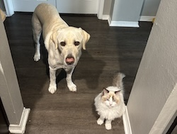

About Me
My name is Anna Batchelor. I’m currently working towards my second bachelor’s degree and looking for ways to build skills that are useful beyond the classroom. I’m interested in making a career shift in the next year or so and school will help with that. I’m especially focused on developing practical, real-world experience that will support long-term goals and open up new opportunities.
Outside of school and work, I try to stay active and make time for creative things when I can. I enjoy being outdoors, the summer sunshine and heat is the main reason I moved to Texas. Indoors, I spend time playing video games, drawing, and reading. I’m especially into narrative-driven games. I share my home with my dog Hatch whose always ready for an adventure and my cat Mimic, who prefers to supervise from a distance unless there’s food involved. They both bring a lot of fun and personality to my routine.
My Web Development Journey
I signed up for this class because I wanted to rebuild some skills I haven’t used in a while. Some time ago, I took a course on building websites using the Django framework. It was a good introduction to how web apps are structured, but it focused more on backend development than front-end design. I’ve also worked a bit with HTML5, CSS, and JavaScript, though my experience is limited and it’s been a few years since I used any of it regularly.
What I’m hoping to get out of this class is a clearer understanding of how to build and organize a website from the ground up. I want to brush up on the basics, fill in the gaps, and feel more comfortable working on simple web projects without needing to rely on templates or tutorials for every step.
Luigi
I picked Luigi, from the Nintendo franchise Super Mario, as my avatar for this class. He’s usually in the background, but he’s still in the mix. He’s known for being a little cautious and kind of clumsy at times, but he always finds a way through. He’s not the main character, but he sticks with it and gets things done.
Luigi is Mario’s younger twin, first appearing in 1983 in Nintendo’s arcade platformer Mario Bros. In that game he was a green version of Mario, but he’s grown into his own character since then. He became the main character in the Luigi’s Mansion series, where he hunts ghosts with his Poltergust vacuum. He has the ability to jump higher than Mario, but he’s slipperier on his feet.
| Release Year | Game Title | Console |
|---|---|---|
| 1990 | Luigi's Hammer Toss | Game & Watch |
| 2001 | Luigi's Mansion | GameCube |
| 2003 | Mario & Luigi: Superstar Saga | Game Boy Advance |
| 2013 | New Super Luigi U | Wii U |
| 2013 | Luigi's Mansion: Dark Moon | Nintendo 3DS |
| 2019 | Luigi's Mansion 3 | Nintendo Switch |
| 2024 | Luigi's Mansion 2 HD | Nintendo Switch |